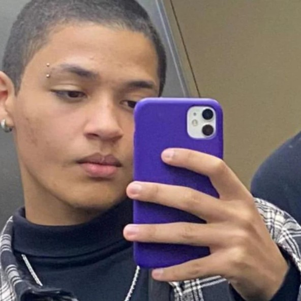

Desenvolvedor front-end dedicado, especializado nas tecnologias essenciais de HTML, CSS e JavaScript. Transformo designs em interfaces envolventes e responsivas, mantendo altos padrões de qualidade e usabilidade.
Redes Sociais